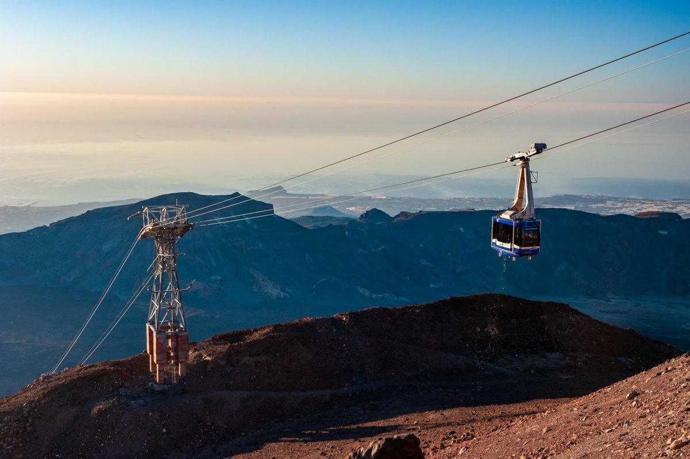

Jednou z nejoblíbenějších turistických destinací, kterou byste při návštěvě Tenerife rozhodně neměli vynechat, je výšlap na nejvyšší horu Španělska, Pico del Teide (3 718 m), která je zároveň činnou sopkou a přírodním symbolem celého ostrova. Věřte, že pokud se sem vypravíte, určitě nebudete litovat. Jedinečná měsíční krajina plná lávových útvarů a siřičitých pramenů stojí za zhlédnutí stejně jako nebývalý výhled na oceán a sněhově bílé mraky. Impozantní El Teide naleznete přibližně ve středu ostrova ve stejnojmenném národním parku, který zabírá 36 % ostrova. Při cestě na vrchol mějte na paměti, že se můžou dostavit problémy s nadmořskou výškou (bolesti hlavy, ztížené dýchání, vysoká intenzita slunečního záření).
Povolení ke vstupu
Vrchol Pico del Teide je naprosto unikátní lokalitou, proto je přístup na něj striktně omezen a je tedy nutné si vyřídit povolení na oficiálních stránkách
národního parku. Povolení je vydáváno
zdarma, z důvodu obrovského zájmu je
nutné ho rezervovat se značným předstihem. Obvykle bývají povolenky
rozebrány na 2-3 měsíce dopředu! Povolení je třeba pouze pro poslední 700 metrů dlouhý úsek cesty zvané "Telesforo Bravo" (viz
mapa trasy) od horní stanice lanovky na vrchol.
Výstup na Pico del Teide – varianty trasy Základní pěší trasa na vrchol Pico del Teide je pouze jedna.
Montaña Blanca - La Rambleta
Výchozí bod je u parkoviště na místě zvaném Montaña Blanca. Parkoviště je velmi malé a často se parkuje i na volných místech podél silnice. Výstup je poměrně náročný, ale průměrně trénovaný turista ho zvládne bez speciálního vybavení. Samozřejmostí jsou však kvalitní a pevné turistické boty. První polovina trasy (cca 4 km) je pohodlná a jen mírně do kopce po šotolinové cestě. Druhá polovina je už strmější a velmi kamenitá, kde je vyšlapaná poměrně úzká stezka. Vyloženě nebezpečných úseků se však obávat nemusíte. Jednu noc můžete strávit v chatě Refugio de Altavista. Ovšem je třeba si zavčasu vyřídit rezervaci místa. Chata se nachází ve výšce 3 271 m n. m. Po cca 8,5 km dojdete k horní stanici lanovky, odkud vás čeká už jen 700metrový úsek na vrchol. Na začátku tohoto úseku vždy ochranka národního parku kontroluje povolenky.
Vzdálenost: 9,5 km jedním směrem
Čas: cca 5hodin tam + 2,5 hodiny zpět
Převýšení: cca 1350 metrů
Náročnost: obtížná (bez nutnosti speciálního vybavení)
La Catedral
Druhá trasa vede od skalních útvarů La Catedral z druhé strany hory okolo vrcholu Pico Viejo. Je delší, mírnější, ale vede náročnějším terénem, kdy se cesta často ztrácí mezi kameny a občas vůbec není čitelná ani značená. I z toho důvodu je tato cesta výrazně méně frekventovaná.
Vzdálenost: 10 km jedním směrem
Čas: cca 5,5 hodiny tam + 3 hodiny zpět
Převýšení: cca 1570 metrů
Náročnost: obtížná(bez nutnosti speciálního vybavení)
Lanovka na Pico del Teide
Až do výšky 3 555 metrů se můžete přiblížit visutou kabinovou lanovkou, ke které se dostanete autem, ale i autobusem číslo 342. Spodní stanice lanové dráhy leží ve výšce 2 356 metrů a celou trasu pod vrchol překoná dvojice moderních kabinek za necelých 8 minut.
Lanovka je v provozu
denně po celý rok:První jízda: 9.00
Poslední jízda nahoru: 16:00
Poslední jízda dolů: 16:50
Ceny jízdenek jsou následující:
21 EUR jednosměrně (děti 3-13 let za 10,50 EUR)
37 EUR zpáteční (děti 3-13 let za 18,50 EUR)
Počet míst je omezený a jízdenky na lanovku jdou koupit
pouze online na
webu lanové dráhy
